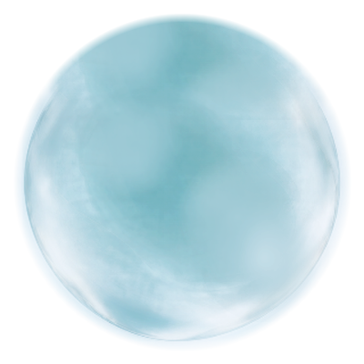
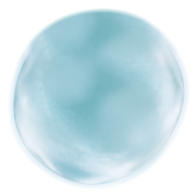
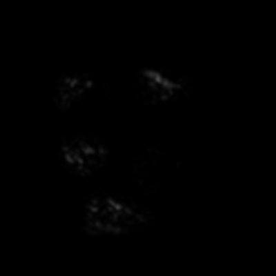
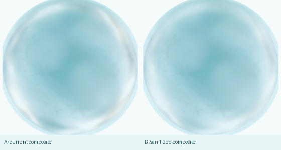

M1.3 CARRIER SANITATION
FINAL ART 离线 donor baking · verification only · 不改 production · 不进入 M2
REFERENCE
FINAL_ART_025 是 offline derivation donor + primary material reference；FINAL_ART_050 只提供 depth / thickness / cloudy organization guide；FROZEN_K2 只保留 endpoint authority；D K0 只提供 neutral restraint。所有 reference 均不作为 runtime direct sample。


DONOR SOURCE OUTPUTS

局部 irregular continuity repair 后的 cloudy mass、局部厚薄和水体重量。

analytic body thickness + 025/050 low-frequency local mass；RGB = shallow / medium / deep。

025 band-pass vocabulary，经 irregular feathered extraction 与 fragmented alpha sanitation。
REVIEW-ONLY SANITATION EVIDENCE

sanitation 前，用于和最终 carrier 对照。

small bend + local stretch；仅用于拉出隐藏 seam，不是 deformation 实现。

未经显示增益的 source alpha。

只提高显示增益；应读作稀疏水纹而不是矩形 patch。

A 当前 composite；B overlap-sanitized composite。
formal source unchanged；只审计最终 coverage。
VOLUME SANITATION = PASS
DEFORMATION STRESS = PASS · SPARSE DETAIL SANITATION = PASS · FORMAL SHELL FINAL COMPOSITING = PASS
DEFORMATION STRESS = PASS · SPARSE DETAIL SANITATION = PASS · FORMAL SHELL FINAL COMPOSITING = PASS
RESULT
CURRENT DONOR HERO · STATIC